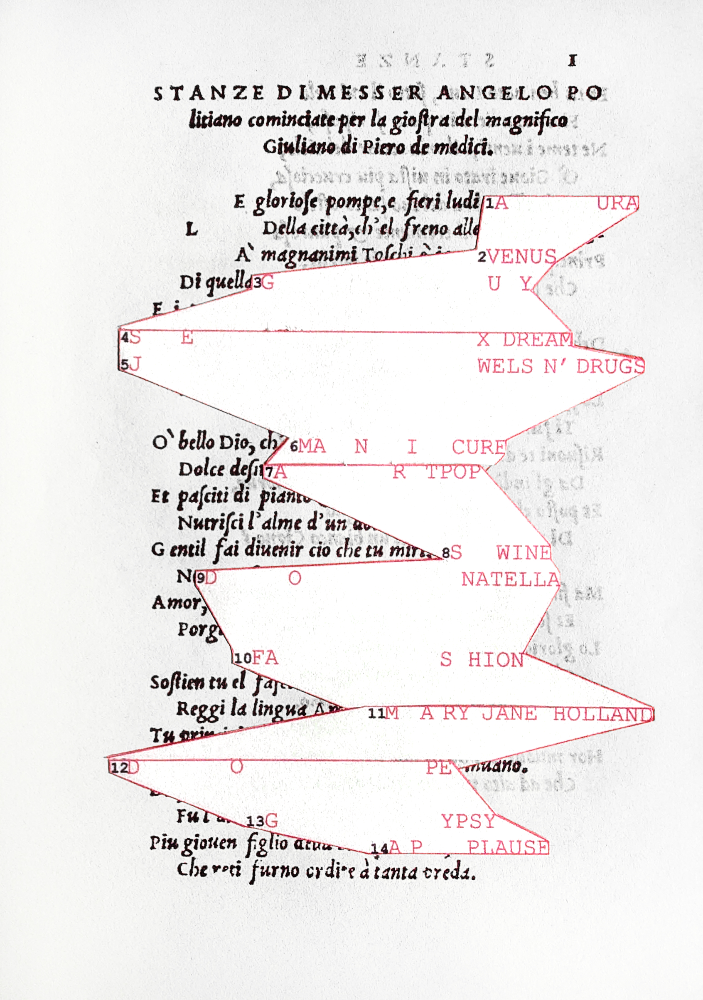
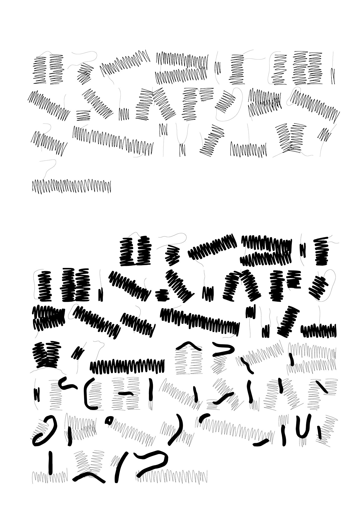

installation view from suggestion for youport workers usually need to wear various safety gear, such as safety shoes, helmets, and gloves.
however, in a port filled with stacked shipping containers, faced with iron sheets, steel bars, and
concrete, these protective measures seem insignificant. confronted with these industrial machines and
materials, we truly see the fragility of the human body.
at the same time, when workers put on their uniforms, what we see are prepared workers, not individuals with
their own emotions and experiences. work uniforms objectify us.
based on these ideas, in this zine, I want to express the vast gap between humans and machines, humans and
products, and how we fall into the trap of dehumanization.room r1.08 packed in plastic trashbagpyramid
drawings of swearing words engraved on golden pyramid, written wishes of people screen printed on toilet
paper, after ten thousand years, would “fuck you” be more important than euro, skating, chanel bag, tesla
truck, porsche gt3, soo kim’s curry, bjork’s house, solo exhibition in moma, engineering position in aston
martin?
the upper part of pyramid is ceramic covered with sheet gold, the down part is made of cardboard and toilet
paper.dancing diva (eyes grown on hands version)
how would we dance if our eyes were grown on our hands?
_baby shark
_jingle bell rock
_stars align
_chinese radio calisthenicspets in safarihahahain-between eye and truth, no.2
different from my previous work, I shifted the focus from space(a room) to object. in this work, I took
photos of all visible surfaces of a table(shown in the last photo): top, legs, edges, corners, etc. I used
these photos to reassemble the table on paper, rebuild three dimensional object on plane surface. rules of
3d world are invalid and not required anymore.in-between eye and truth, no.3
can photos reflect the world objectively？project “toilet” focused only on toilet, an white and ceramic object.
started same as previous works, i took photos of every inch of toilet, collaged these images to construct a
complete toilet on paper. (3, 6, 7)
in the next step, i evened the difference of light, which caused difference of brightness and darkness in
photo, toilet became a white color block. (4)
after this i changed the medium of work(from paper to ceramic, which is normally the raw material of
toilet), to get a flattened ceramic toilet, and originally it should be one piece of white ceramic
piece(similar with image 4), but it was broken into pieces accidentally. (1)
and i collaged the original photos three dimensionally. (5)
at the end, i replaced the paper photo with ceramic plates that has same shape, built a three dimensional
ceramic toilet. same as the toilet we see, it’s touchable, white and made of ceramic. the camera, became a
transfer point of these two toilets. (2)
the original photos (8)
6 books about copying and recreating
book design - typography in three dimensions
my first typeface design
in this typeface, i deconstruct the letters into parts by how visually they look without considering how
they are written, and rebuild new-structured letters by using two different type of hand-drawn lines.
because of huge contrast of thin line(initial inspiration is curves of hair) and chaotic line, the structure
of letter became more unbalanced and unrecognizable.
this typeface has three different weights and for each weight I designed five different variations(not shown
in this post), to have more possibilities of typography.å
poster for typeface
punctuation poster
shoting process
product information (I AM VISIBLE)
a zine inspired by Katarina Jazbec’s YOU CAN’T AUTOMATE ME (2021), a flim about the port workers.
port workers usually need to wear various safety gear, such as safety shoes, helmets, and gloves. however,
in a port filled with stacked shipping containers, faced with iron sheets, steel bars, and concrete, these
protective measures seem insignificant. confronted with these industrial machines and materials, we truly
see the fragility of the human body.
at the same time, when workers put on their uniforms, what we see are prepared workers, not individuals with
their own emotions and experiences. work uniforms objectify us.
based on these ideas, in this zine, I want to express the vast gap between humans and machines, humans and
products, and how we fall into the trap of dehumanization.
redesign of parkett
parkett is a contemporary art magazine. in 2017 it published its closing print issue in response to people’s
digital reading habits.
therefore, blending parkett’s print legacy with digital content is basic concept of this redesigned edition:
original articles appear right-side up; flipped, they reveal embedded social media snippets from instagram,
pinterest, or google. mismatched images and false footnotes disrupt expectations, mirroring online
information’s unreliability—a reflection of how we consume art today.
trump calender
web with full of buttonsweb with full of buttonspunctuation posterwhen workers put on their uniforms, what we see are prepared workers, not individuals with
their own emotions and experiences. work uniforms objectify us.
based on these ideas, in this zine, I want to express the vast gap between humans and machines, humans and
products, and how we fall into the trap of dehumanization.

STANZE

specimen for a typeface i designed, shows three weights and fifteen variations of letters, their
application and different possibilities of combinations
a book about people in bed. the pages follow both chronological order and the activities of people,
from being awake (printed on yellow paper) to sleeping (printed on white paper and folded inside).
content images originate from rijksmuseum archive.
school as a fountain
pets in firefox
gay, label, figure
redesign of parkett
parkett is a contemporary art magazine. in 2017 it published its closing print issue in response to people’s
digital reading habits.
therefore, blending parkett’s print legacy with digital content is basic concept of this redesigned edition:
original articles appear right-side up; flipped, they reveal embedded social media snippets from instagram,
pinterest, or google. mismatched images and false footnotes disrupt expectations, mirroring online
information’s unreliability—a reflection of how we consume art today.
pyramid
drawings of swearing words engraved on golden pyramid, written wishes of people screen printed on toilet
paper, after ten thousand years, would "fuck you" be more important than euro, skating, chanel bag, tesla
truck, porsche gt3, soo kim's curry, bjork's house, solo exhibition in moma, engineering position in aston
martin?
the upper part of pyramid is ceramic covered with sheet gold, the down part is made of cardboard and toilet
paper.
ping-pong calender, 356days of 2023
"YOU DON'T REALLY HATE TRUMP, KAREN, YOU'RE JUST STUPID"